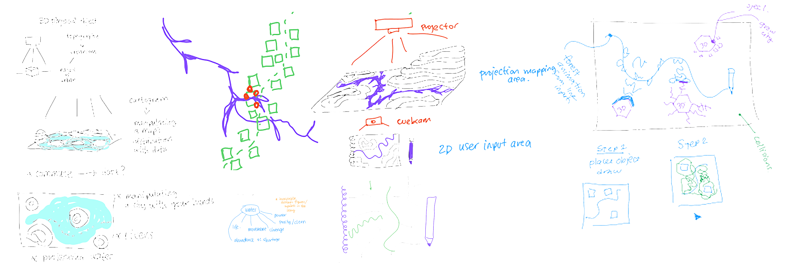

This project explores the organic growth of both cities and nature, drawing parallels between the expansion of built environments with natural growth patterns. It raises questions such as: Should cities be designed with rigid grids to ensure livability? How do natural elements like water, forests, and topography influence human settlement and growth? And does organic urban development allow for a more harmonious coexistence with nature?
In this interactive installation, viewers interact with the project by altering the topographical elements and moving their hands to observe a city growing between these natural forms. Through this transformation, viewers observe how nature and the city might intertwine, prompting reflection on how urban environments can grow in harmony with the natural world.
Process
Ideation
We started out thinking about the relationship of cities with water, and how water affects the emergence of a city. We decided that we wanted to use a 3D topography model, so that we could project the water on the topographical surface and explore interactions with the user (via a webcam or mediapipe) simulating urban and natural elements (with particle systems or another way to create organic visuals), and terrains. We wanted the natural elements to be generated via more organic movement of the user (drawing, hand gestures and etc.), and the city to be generated with more mechanical movements like putting blocks of geometry onto the interaction zone. Similarly we also thought about the user being able to alter the topography by moving some parts of it around. We ideated how we could make these interactions work, and what the visual outcomes would be.

Topography Model
We discussed that the model should be big and have a detailed surface. We also decided that the observer should be able to interact with it, such as changing the position of the hills. Since we aimed to integrate depth detection to our model, we wanted to have a topography with varying depths of mountains. We decided not to use a real location but a randomly generated terrain.
To do this, I used Blender's A.N.T Landscape addon where a mesh with noise displacement can be generated and adjusted according to the level of desired details and scale. Then I turned this generated model into isometric lines and exported it for laser cutting. After the laser cutting, we gathered the parts and glued them together. Our topography model was ready.
Depth Detection with Kinect
We firstly used Kinect V2 2.0 and the issue we faced was that it was good at representing large distances of depth, but wasn't so good at giving a detailed view of small distances. Since the height difference in each level on our model was 3mm apart, we needed a more precise representation. We switched from Kinect V2 to Kinect Azure, which gave us a better point cloud representation of the height differences in our model (where the height difference is 6mm between each level). However, we still needed a more precise output and we needed to exclude objects in the distance such as the surface and the floor. To be able to do this we created a custom depth map via GLSL, which allowed us to only have the point cloud of our model, excluding the surrounding objects.
Although we had a good point cloud view of our model, we still needed to represent the height difference with a higher contrast in the output image. To do this, we increased the contrast between the maximum and minimum height difference. Finally we were able to get a clear depth image.

Organic Growth Interaction
For the organic growth, we used noise and edge detection to generate a growing city effect. This time, the organic growth represented the city, so we decided that the generation should happen in square grids. We also decided to change the interaction to hand movement tracked by Mediapipe. The hand is tracked to draw a line and from this line, an organic city generates. We explored that the Kinect camera can be used for Mediapipe as well, so we did not need an extra webcam. For the renewal and the regeneration of the organic city growth, we used a timer that resets the canvas every 30 seconds. We integrated a mask where the lowest and highest parts of the terrain are blocked, so the growth wouldn't happen at those points.
Technical Details
For the model, we used 20 A3 Greyboards of 3mm thickness. Used a laser cutter to cut each level of topography, and finally glued them together.
We hung the Kinect Azure and a Logitech webcam (we realized we did not need this later, and we can use Kinect's camera for Mediapipe instead) from the ceiling, using steel zip clips. We used a levelling ruler to align the Kinect perfectly. We projected onto the model using a BenQ W1070 Projector.
We used Blender for modelling, and TouchDesigner to create the interactions and the visuals.

Final Images